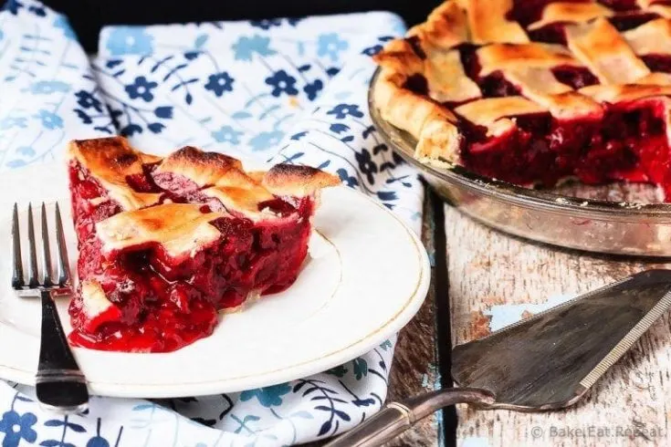

Raspberry Pie

Description
Easy to make raspberry pie can be made with either fresh or frozen raspberries. This is the perfect dessert - tart, sweet, perfect raspberry pie!
Ingredients
- 1/2 recipe Perfect Pastry (or enough pastry for one double crust)
- 5 cups raspberries (fresh or frozen)
- 3/4 cup granulated sugar
- 1/3 cup all-purpose flour
- 1 tablespoon lemon juice
- pinch nutmeg
- 1 large egg
- 1 tablespoon water
Steps
- Preheat the oven to 425 degrees F.
- In a large bowl, gently toss together the raspberries, sugar, flour, lemon juice and nutmeg. Set aside.
- Roll out half of the pastry and fit it inside a 9 inch pie plate, trimming off the excess pastry.
- Place the raspberry mixture inside the pie crust.
- Lightly wet the edge of the crust with a bit of water.
- Roll out the other half of the pastry and set it over top of the berries, or cut it into one inch strips and weave the strips into a lattice top over the berries.
- Crimp the edges to seal them. If you are using a full crust, cut slits in the top to vent the pie.
- Whisk together the egg and water and brush it lightly over top of the pastry.
- Sprinkle with a bit of extra sugar.
- Place the pie on a baking sheet in case it bubbles over.
- Bake for 15 minutes, then REDUCE THE HEAT to 375 degrees F and continue baking for another 35-40 minutes or until the crust is lightly browned and the filling is bubbling.
- If the pastry is getting too brown and the filling isn't bubbling yet, tent some foil over top to prevent more browning.
- Allow the pie to cool completely before slicing so that the filling will firm up.